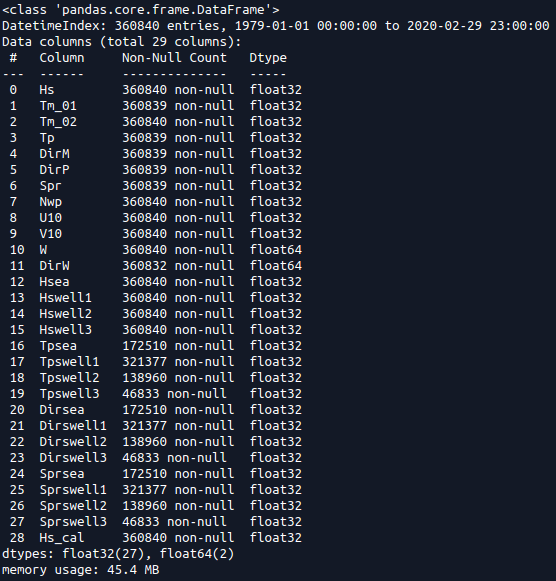
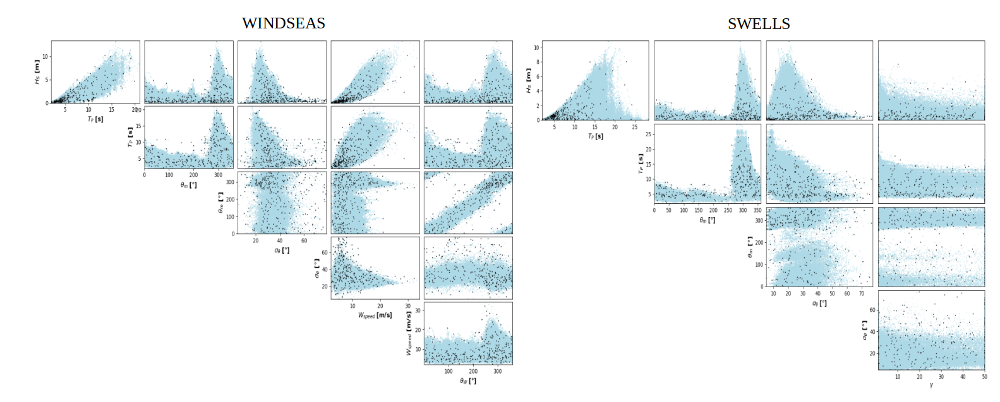
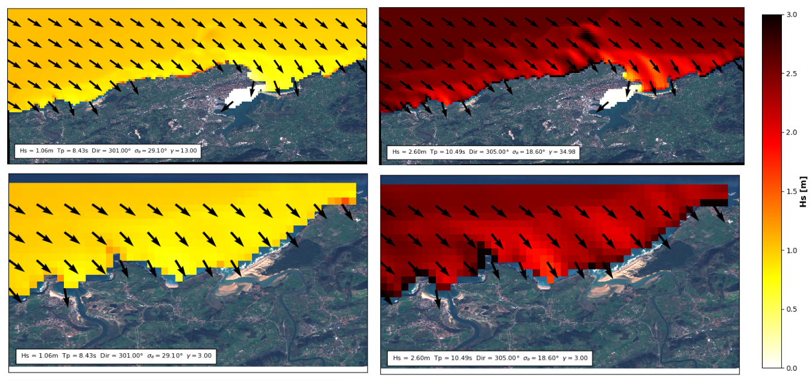
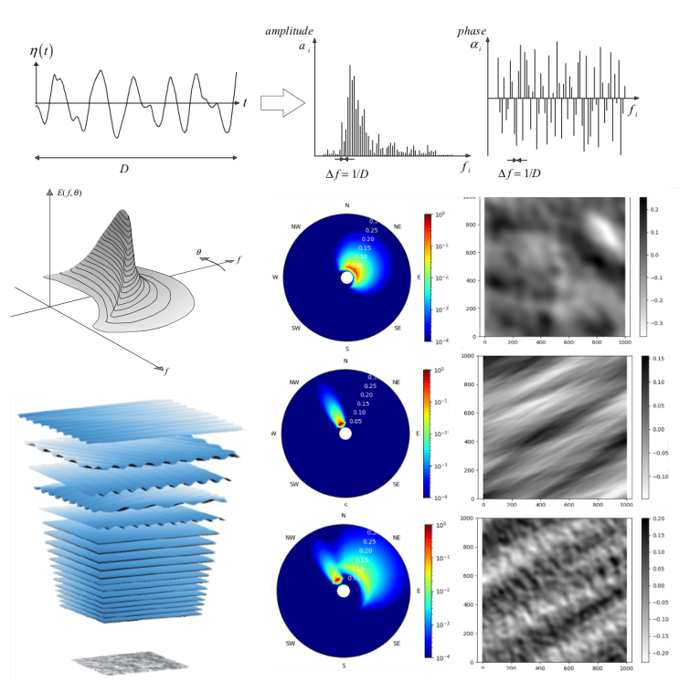
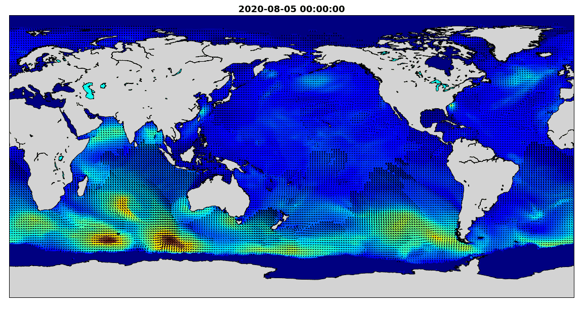
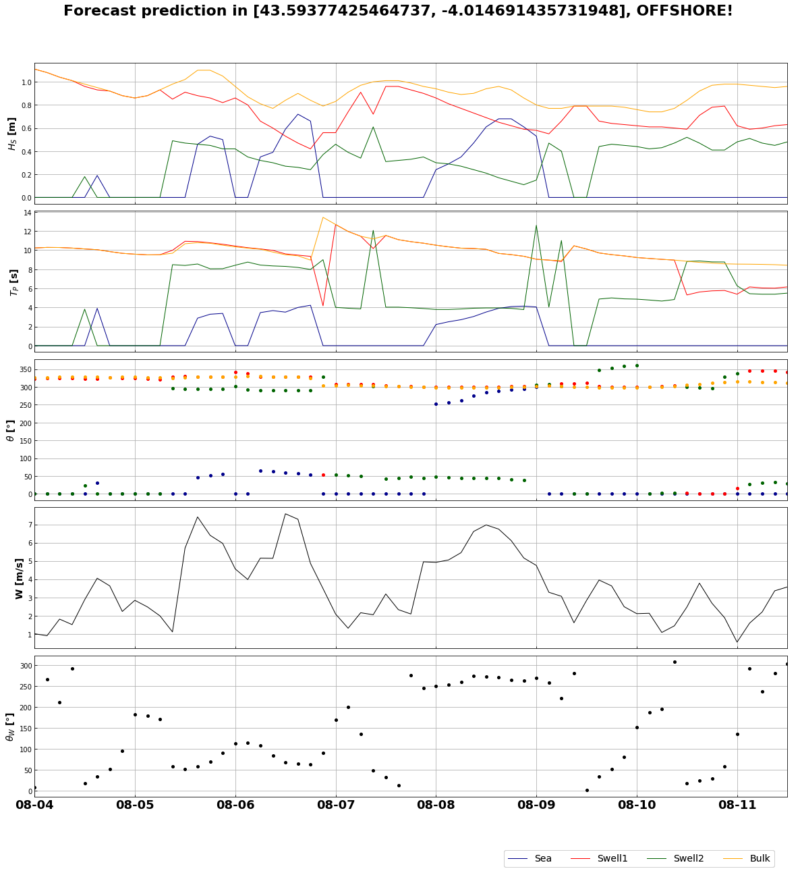

DeliWaves¶
Useful actions to perform over wave reanalysis data¶
DeliWaves is an open-source software toolkit written in python that enables the users to perform different actions with wave reanalysis data. A description of what has been done can be seen in this paper:
Javier Tausia Hoyal, 2020. (attached)
also the final results in the surfbreaks of interest can be found here!!
1. Description¶
In coastal engineering studies exist some different models and actions that are usually performed but differently by similar investigation groups. The aim of this repository is proportioning the user an easy way to perform these widely used actions worldwide. For the correct usage of the different notebooks and python scripts (it is also required in CalValWaves), the only thing needed is an ordered dataframe with the reanalysis information of the location of interest. For the rest, everything is proportioned, as once this initial dataframe exists, all the code can be run.
2. Data download¶
As it has been previously mentioned, the only thing needed is an initial dataframe with the wave historic reanalysis. More information about this downloading will be posted, but while this part is added, the shape of this dataframe must be as the one shown below:

Notice that not all the variables are extrictly neccessary, but future methods could be added that use these variables, so when the data is downloaded, the saving of all the existent variables is recommended in the case that enough memory space exists.
3. Main contents¶
This repository proportionates code to perform the following actions:
MDA (Maximum Dissimilarity Algorithm)
SWAN (Simulating WAves Nearshore)
RBF (Radial Basis Functions reconstruction)
Spectrum and Free Surface Reconstructions (SAFS)
Foecast (Predictions of the 7-days wave climate worldwide)
check the jupyter-book!!
3.1 MDA¶
The main goal of the workflow followed is the reconstruction of the wave climate in coastal areas and for this purpose, the first step is the selection of the maximum dissimilar cases in the initial dataset. This algorithm can be used for other objectives too. This is the first part that has to be performed and is briefly explained in:
MDA: MDA explanatory notebook
With this notebook, an image as the one shown below can be otained:

The selection of the most dissimilar cases is essential as a hybrid downscaling method is proposed (see the pdf attached).
3.2 SWAN¶
Once the most dissimilar cases have been selected, they are propagated to coastal waters obtaining results as the one shown in a region in the cantabric sea, in the north of Spain:

These propagations are performed by running a nummerical model, using the friendly software developed by the TU Delft (Delft University of Technology) which is called SWAN (Simulating WAves Nearshore). This software propagates windseas and swells to coast from offshore points as the one required for the development of this entire DeliWaves toolbox. The autocontent notebook can be found in:
SWAN: SWAN explanatory notebook
A bathymetry file is needed for this propagation step, so the downloading of the bathymetry is also explained in the previously mentioned notebook.
IMPORTANT!! A swan_ser.exe is included in path swan/lib/resources/swan_bin/ that has been compiled in linux, but if this executable file did not work, here is explained how this compilation can be performed:
Download and Compile SWAN numerical model:
# you may need to install a fortran compiler
sudo apt install gfortran
# download and unpack
wget http://swanmodel.sourceforge.net/download/zip/swan4131.tar.gz
tar -zxvf swan4131.tar.gz
# compile numerical model
cd swan4131/
make config
make ser
now, copy SWAN binary file to module resources and play with it!!
If cases do not run correctly, please check the binary file the wrap.py file is looking for!!
3.3 RBF¶
Radial basis function (RBF) interpolation is an advanced method in approximation theory for constructing high-order accurate interpolants of unstructured data, possibly in high-dimensional spaces. The interpolant takes the form of a weighted sum of radial basis functions. RBF interpolation is a mesh-free method, meaning the nodes (points in the domain) need not lie on a structured grid, and does not require the formation of a mesh. It is often spectrally accurate and stable for large numbers of nodes even in high dimensions. The figure below illustrates how various of these radial basis functions form jointly the required final function:

This description matches perfectly the purpose of the study, as our goal is to obtain the historical time series but just using the cases propagated, which is an interpolation by definition. The autocontent notebook with all the necessary information can be found at:
RBF: RBF explanatory notebook
3.4 Spectra and free surface reconstructions¶
The data is propagated nearshore and now, aggregated parameters wanne be obtained as they are useful for the global analysis. For this calculation, bulk equations as the shown in the RBF notebook can be used, but another way to calculate these parameters is using the spectrum described by the sea state. Spectra are essential in almost all coastal engineering studies, as they represent perfectly a sea state. The figure below shows all the neccessary information to understand what a spectrum is: First, it represents the distribution of frequencies and phases existent, also the directions if the 3d spectrum is studied, so given a buoy measure during a finite time period, the spectrum as the one shown can be obtained. The subplot with the different layers represents how all the components existent in one spectrum can be added together to reconstruct the free surface elevation and the big subplot in the right correlates the spectra and their surface elevations. All this is explained in the notebook though:
Spectra: Spectrum and free surface explanatory notebook

3.5 Forecast¶
Forecast predictions have been also included worldwide. Everyday, thousands of surfers request information from websites such as surf forecast or windguru, but these predictions are proportioned in offshore locations, so the actual prediction in the coast is not always the one available offshore. With the scripts existent in the toolbox, coastal forecast with a good resolution can be obtained.
Forecast class: Forecast main class
Forecast main notebook: Forecast explanatory notebook
Using this code, a GIF as the one shown below will be obtained:

And the predictions have the next aspect:

A detailed notebook in Cantabria is aldo added, obtaining forecast predictions in different requested beaches along the north shore of Spain with the form:

5. Installation¶
5.1 Create an environment in conda¶
To run the toolbox you first need to install the required Python packages in an environment. To do this we will see Anaconda, which can be downloaded freely here.
Once you have installed it on your PC, open the Anaconda prompt (in Mac and Linux, open a terminal window) and use the cd command to go to the folder where you have cloned this repository.
Create a new environment named deli with all the required packages:
conda env create -f environment.yml -n deli
5.2 Activate conda environment¶
All the required packages have been now installed in an environment called deli. Now, activate this new environment:
conda activate deli
6. Play¶
Now everything has been installed, you can now start to play with the python code and the jupyter notebooks. Be careful, as some important parameters can be adjusted during the different processes (construction of the object of the classes, first line code in the jupyter notebook). Nevertheless, parameters used are also shown in the example.
Additional support:¶
Data used in the project and a detailed explanation of the acquisition can be requested from jtausiahoyal@gmail.com.